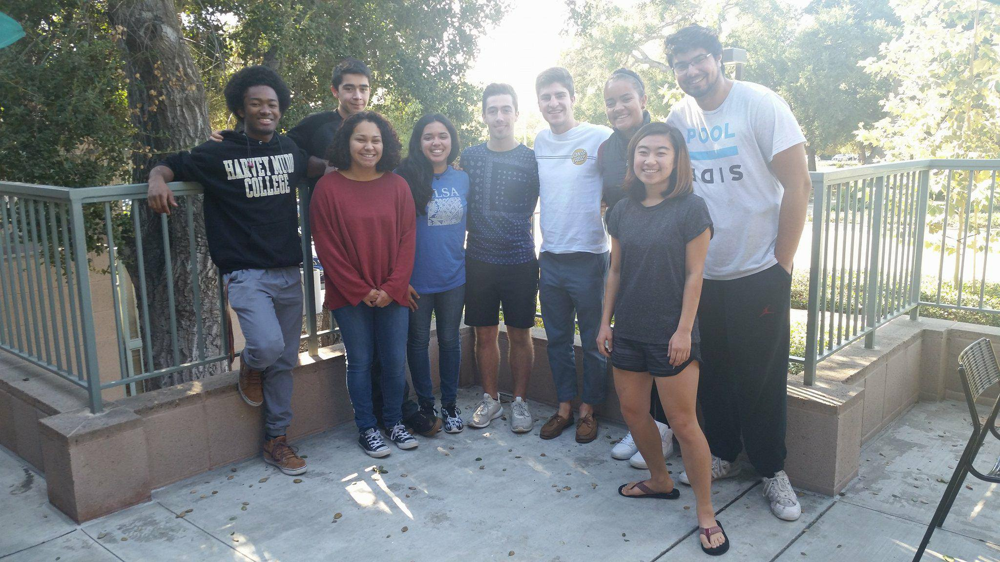
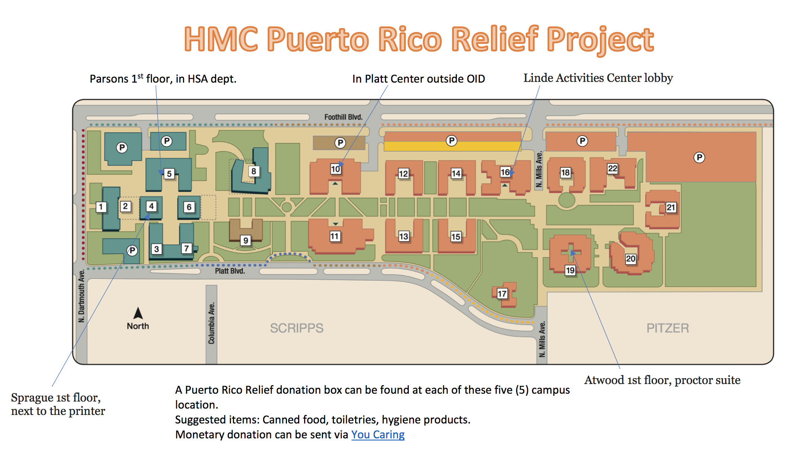

Puerto Rico Relief
A Collaboration with the Harvey Mudd College Puerto Rico Hurricane Relief Project
 The Puerto Rico Hurricane Relief Project was founded by Viviana Bermudez Reyes (HMC Class of 2018) following the Category 5 Hurricance Maria that left Puerto Rico devastated in September 2017. The project has organized fundraisers to raise awareness and money for long-term relief efforts on the island. In addition, there have been clothing, non-perishable foods, and portable battery drives on campus throughout the year to gather items to donate to charities on the ground in Puerto Rico helping with relief.
 The Harvey Mudd College Chapter of EWB has committed to making this project an ongoing project our members will be involved in. We aim to have further fundraisers and donations in the coming year and raise awareness about the issue in the Harvey Mudd College community. We are also pursuing collaborations with researchers in Puerto Rico studying hurricanes and engineering relief efforts. We have reached out to Professors at the University of Puerto Rico at Mayagüez who have been in contact with the Puerto Rico Relief team at Harvey Mudd College about collaborations and any way our chapter can help with their work. We look forward to future collaborations with other organizations to make a difference and help the communities in Puerto Rico recover.